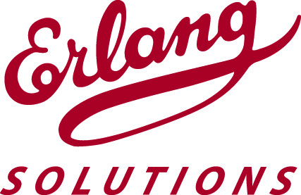

Francesco Cesarini
Founder of Erlang Solutions and co-author of Erlang Programming
Erlang Solutions Ltd.
Francesco Cesarini is the founder of Erlang Solutions Ltd. He has used
Erlang on a daily basis since 1995, starting as an intern at
Ericsson’s computer science laboratory, the birthplace of Erlang. He
moved on to Ericsson’s Erlang training and consulting arm working on the
first release of OTP, applying it to turnkey solutions and flagship
telecom applications. In 1999, soon after Erlang was released as open
source, he founded Erlang Solutions, who have become the world leaders
in Erlang based consulting, contracting, training and systems
development. Francesco has worked in major Erlang based projects both
within and outside Ericsson, and as Technical Director, has led the
development and consulting teams at Erlang Solutions. He is also the
co-author of Erlang Programming, a book recently published by O’Reilly
and lectures at Oxford University.
Erlang Programming on Amazon
Erlang Solutions Ltd.
Twitter: @FrancescoC
Erlang Programming on Amazon
Erlang Solutions Ltd.
Twitter: @FrancescoC

Francesco Cesarini is Giving the Following Talks
Erlang from behind the Trenches
Erlang is a programming language designed for the Internet Age, although it pre-dates the Web. It is a language designed for multi-core computers, although it pre-dates them too. It is a "beacon language", to quote Haskell guru Simon Peyton-Jones, in that it more clearly than any other language demonstrates the benefits of concurrency-oriented programming.
In this talk, Francesco will introduce Erlang from behind the trenches, looking at how its history influenced its constructs. He will be doing so from a personal perspective, with anecdotes from his time at the Ericsson computer science lab at a time when the language was being heavily influenced and later when working on the OTP R1 release.
Morning Bootcamp - Practical Erlang Programming
This hands on tutorial will give you an introduction to the Erlang programming language. You will learn the basics of how to read, write and structure Erlang programs.
We start with an insight into the theory and concepts behind sequential and concurrent Erlang, allowing you to get acquainted with the Erlang syntax and semantics.
We conclude with an overview of the error handling mechanisms used to build fault tolerant systems with five nines availability.
Delegates who will benefit from this tutorial includes those want to learn more about Erlang and its concurrency model. Attending will put you on the right track in building distributed, fault tolerant massively concurrent soft real-time systems.
In order to get the most out of this tutorial, you must have a good grasp of other programming languages. This will be a hands on tutorial. You will need a laptop with Erlang installed and your favourite editor.
To be able to attend the tutorial, you must have Erlang working alongside your favourite editor. You can download binary snapshots for most OSes here.
If you prefer to compile from source, you can download ithere.
It would be beneficial if you can get the Erlang mode running on your favourite editor. The most commonly used editors include Eclipse, emacs and vim, but you will find an Erlang support in most environments. To install Emacs, find the appropriate manu al page in the Erlang documentation. VIM should work out of the box. Eclipse users need the ErlIDE plugin.
If you have time to dabble with Erlang, a great site with simple tutorials is tryerlang.org
Keywords: Erlang, Fault Tolerant Systems, Concurrency, Emerging Languages, Functional Programming
Target Audience: Delegates who will benefit from this tutorial includes those want to learn more about Erlang and its concurrency model. Attending will put you on the right track in building distributed, fault tolerant massively concurrent soft real-time systems
We start with an insight into the theory and concepts behind sequential and concurrent Erlang, allowing you to get acquainted with the Erlang syntax and semantics.
We conclude with an overview of the error handling mechanisms used to build fault tolerant systems with five nines availability.
Delegates who will benefit from this tutorial includes those want to learn more about Erlang and its concurrency model. Attending will put you on the right track in building distributed, fault tolerant massively concurrent soft real-time systems.
In order to get the most out of this tutorial, you must have a good grasp of other programming languages. This will be a hands on tutorial. You will need a laptop with Erlang installed and your favourite editor.
To be able to attend the tutorial, you must have Erlang working alongside your favourite editor. You can download binary snapshots for most OSes here.
If you prefer to compile from source, you can download ithere.
It would be beneficial if you can get the Erlang mode running on your favourite editor. The most commonly used editors include Eclipse, emacs and vim, but you will find an Erlang support in most environments. To install Emacs, find the appropriate manu al page in the Erlang documentation. VIM should work out of the box. Eclipse users need the ErlIDE plugin.
If you have time to dabble with Erlang, a great site with simple tutorials is tryerlang.org
Keywords: Erlang, Fault Tolerant Systems, Concurrency, Emerging Languages, Functional Programming
Target Audience: Delegates who will benefit from this tutorial includes those want to learn more about Erlang and its concurrency model. Attending will put you on the right track in building distributed, fault tolerant massively concurrent soft real-time systems